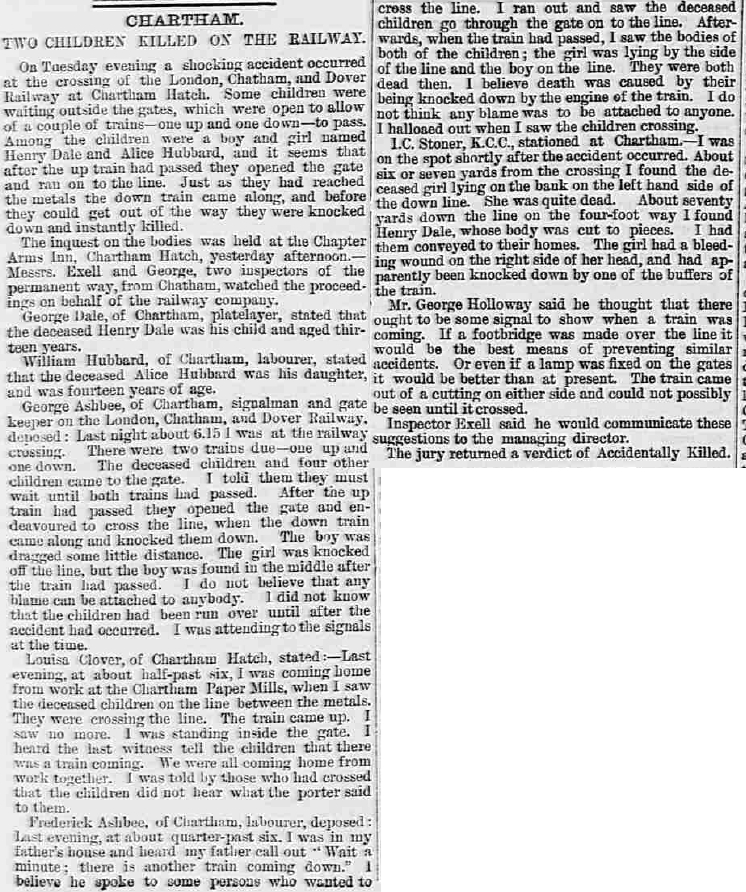
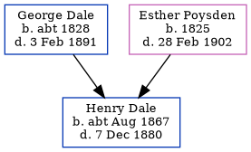

Henry Dale cAug 1867 - 1880
[ Home ] | [ Calendar ] | [ Surnames Index ] | [ Errors ] | [ Family History ]The child of George Dale (an agricultural labourer) and Esther Poysden (a servant), Henry Dale, the great-great-uncle of Nigel Horne, was born in Chartham, Kent, England c. Aug 18671,2,3,4,5,6 and baptised there at St Mary's Church on 4 Aug 1867. On 2 Apr 1871, he was living in Chartham Hatch, Kent, England8 which is where he died on 7 Dec 18803,5. He was buried at St Mary's Church in Chartham on 13 Dec 18807.
Parents
- George was born c. 1828
- Esther was born in 1825
Citations
- 1871 England Census Online publication - Provo, UT, USA: The Generations Network, Inc., 2004.Original data - Census Returns of England and Wales, 1871. Kew, Surrey, England: The National Archives of the UK (TNA): Public Record Office (PRO), 1871. Data imaged from the National
- England & Wales births 1837-2006 - Findmypast
- England & Wales deaths 1837-2007 - Findmypast
- England & Wales, FreeBMD Birth Index, 1837-1915 Online publication - Provo, UT, USA: The Generations Network, Inc., 2006.Original data - General Register Office. England and Wales Civil Registration Indexes. London, England: General Register Office. © Crown copyright. Published by permission of the Cont
- England & Wales, FreeBMD Death Index: 1837-1915 Online publication - Provo, UT, USA: The Generations Network, Inc., 2006.Original data - General Register Office. England and Wales Civil Registration Indexes. London, England: General Register Office. © Crown copyright. Published by permission of the Cont
- Kent, Canterbury Archdeaconry Burials - Findmypast
- Kent, Canterbury Archdeaconry Burials - Findmypast
- 1871 England, Wales & Scotland Census - Findmypast (was age 3 and the son of the head of the household)
Media
Whitstable Times and Herne Bay Herald 11 Dec 1880

Kent, Canterbury Archdeaconry burials - GBPRS/CANT/D/95595923
England & Wales births 1837-2006 - BMD/B/1867/3/AZ/000152/062
1871 England, Wales & Scotland Census - GBC/1871/0014163145
Kent Baptisms - GBPRS/CANT/B/96193635
England & Wales deaths 1837-2007 - BMD/D/1880/4/AZ/000083/026
England Births & Baptisms 1538-1975 - R_885421498
Family Tree
Map
Generated by ged2site. Last updated on Jul 3, 2024
Known Issues
May have been living with mother on 2 Apr 1871, but the addresses don't match or aren't detailed enough to be sure
May have been living with father on 2 Apr 1871, but the addresses don't match or aren't detailed enough to be sure